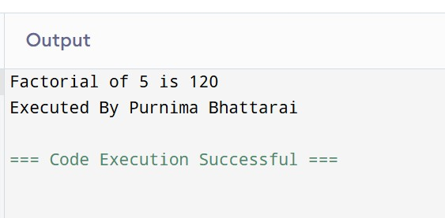

Class 12 Computer Science Syllabus Overview
This syllabus page outlines the key subjects covered in the Class 12 Computer Science curriculum. Each topic is designed to equip students with both theoretical knowledge and practical skills in programming, databases, networking, software development, and current technology trends. The table below shows content-wise marks distribution and estimated working hours for each topic.
| S.N. | Topic | Content wise marks | Working hours |
|---|---|---|---|
| 1 | Database Management System | 8 | 12 |
| 2 | Data Communication and Networking | 9 | 15 |
| 3 | Web Tech – II | 8 | 12 |
| 4 | C Programming II | 8 | 12 |
| 5 | Object Oriented Programming | 6 | 10 |
| 6 | Software Development Life Cycle | 6 | 10 |
| 7 | Recent Trends in Technology | 5 | 9 |
| Total | 50 | 80 | |
Data and Information
1. What is Data?
Data refers to raw facts and figures without any context. It can be numbers, text, images, or sounds collected for processing.
2. What is Information?
Information is processed data that is meaningful and useful for decision-making. It provides context and relevance to raw data.
3. Features of Information
Information should be accurate, timely, relevant, complete, consistent, and understandable to be effective.
Database and Its Purpose
A database is an organized collection of related data stored electronically. Its purpose is to enable efficient storage, retrieval, and management of data while ensuring integrity and security.
Terminologies in Database
1. Table
A structure that organizes data into rows and columns.
2. Field
A column in a table representing a data attribute.
3. Record / Tuple
A row in a table representing a single data item.
4. Object
An entity in object-oriented databases combining data and behavior.
5. Keys
Fields used to uniquely identify records or establish relationships (e.g., primary key, foreign key).
Data Dictionary
A data dictionary is a repository of metadata describing the structure of the database: table names, field names, data types, sizes, constraints, and relationships. It helps users understand and manage the database effectively.
Database Management System (DBMS)
Introduction:
DBMS is software that facilitates creating, managing, and manipulating databases.
Objectives:
To provide efficient data storage, ensure integrity, security, concurrency control, and backup/recovery.
Advantages:
- Reduces data redundancy and inconsistency.
- Ensures data security and integrity.
- Supports concurrent access by multiple users.
- Centralizes data management.
Disadvantages:
- Complex and expensive to implement.
- Requires skilled personnel to manage.
- Potential system failures may affect the whole database.
Types of Database Models
Database models define how data is logically structured and how it is accessed. Each model offers a different approach to organizing and managing data based on specific requirements and applications.
1. Hierarchical Database Model
This model organizes data in a tree-like structure using parent-child relationships. Each parent can have multiple children, but each child has only one parent. It’s similar to a folder structure on a computer.
- Structure: Tree
- Data Relationship: One-to-many
- Example: Organization chart, file systems
- Advantages:
- Efficient for data with a clear hierarchy.
- Fast access to data when hierarchy is known.
- Disadvantages:
- Rigid structure – difficult to reorganize or modify.
- Not suitable for complex many-to-many relationships.
2. Network Database Model
This model allows each record to have multiple parent and child records, forming a graph structure. It uses pointers to establish relationships.
- Structure: Graph
- Data Relationship: Many-to-many
- Example: Telecom billing systems, complex real-world relationships
- Advantages:
- Flexible than hierarchical model.
- Efficient for handling complex relationships.
- Disadvantages:
- Complex structure with difficult navigation.
- Difficult to design and maintain.
3. Relational Database Model
Data is organized into tables (relations) consisting of rows (tuples) and columns (attributes). Relationships between tables are established using keys (primary and foreign).
- Structure: Tables (relations)
- Data Relationship: One-to-one, one-to-many, many-to-many (using join tables)
- Example: MySQL, PostgreSQL, Oracle
- Advantages:
- Simple to use and understand (uses SQL).
- Supports powerful query capabilities.
- Ensures data integrity through constraints and keys.
- Disadvantages:
- May not be efficient for very large or complex datasets.
- Requires normalization for data integrity, which can make design complex.
4. Entity-Relational (ER) Model
This is a high-level conceptual data model used for designing databases visually. It uses entities (objects), attributes (properties), and relationships to represent data and its structure.
- Structure: ER diagrams with entities, relationships, attributes
- Use: Primarily for database design (before implementation)
- Example: Designing a student-database with entities like Student, Course, Instructor
- Advantages:
- Easy to understand and communicate with stakeholders.
- Ideal for logical database design before physical implementation.
- Disadvantages:
- Not used for actual data storage or querying.
- Needs to be translated into a relational or other implementable model.
Integrity Constraints and Types
Domain Integrity: Domain constraints are a type of integrity constraint that ensure the values stored in a column (or attribute) of a database are valid and within a specific range or domain. In simple terms, they define what type of data is allowed in a column and restrict invalid data entry. The data type of domain include string, char, time, integer, date, currency etc. The value of the attribute must be available in comparable domains..Ensures data in a field is valid per its data type and allowed range.
Entity Integrity: Entity integrity constraints state that primary key can never contain null value because primary key is used to determine individual rows in a relation uniquely, if primary key contains null value then we cannot identify those rows. A table can contain null value in it except primary key field..Ensures each record has a unique primary key that is not null.
Referential Integrity: Ensures foreign key values correctly reference primary keys or are null.
Keys: Include primary key, foreign key, candidate key, and composite key that help uniquely identify records and maintain relationships.
Normalization
Introduction:
Normalization is a systematic process in database design that organizes data to minimize redundancy (duplicate data) and dependency by dividing large tables into smaller, related tables. The main goal is to ensure data integrity and reduce anomalies during data operations like insert, update, and delete.
Why Normalize?
Without normalization, databases may suffer from:
- Insertion anomalies: Difficulty adding data due to missing other data.
- Update anomalies: Inconsistent data when multiple copies exist.
- Deletion anomalies: Losing critical data unintentionally when deleting related data.
Normal Forms: These are rules (or guidelines) to achieve normalization, each building on the previous one:
1NF (First Normal Form)
Requires that:
- Each column contains atomic (indivisible) values.
- Each record is unique.
- No repeating groups or arrays.
Example: A table with multiple phone numbers in one field violates 1NF; splitting phone numbers into separate rows or fields satisfies 1NF.
2NF (Second Normal Form)
Requires that:
- The table is already in 1NF.
- All non-key attributes are fully functionally dependent on the entire primary key.
Note: This mainly applies to tables with composite keys (primary key made of multiple fields). It eliminates partial dependency where a non-key attribute depends only on part of the primary key.
3NF (Third Normal Form)
Requires that:
- The table is already in 2NF.
- No transitive dependency exists; i.e., non-key attributes do not depend on other non-key attributes.
Example: If "City" depends on "Zip Code" and "Zip Code" depends on the primary key, then "City" should be moved to a separate table to remove transitive dependency.
Advantages of Normalization
- Reduces data redundancy, saving storage space.
- Improves data integrity and consistency.
- Makes data maintenance easier and less error-prone.
- Helps avoid data anomalies during insert, update, or delete operations.
- Encourages a clear logical database design.
Disadvantages of Normalization
- Highly normalized databases can result in complex queries with multiple table joins, impacting performance.
- Sometimes, over-normalization can complicate database design and make application development harder.
- Increased number of tables may slow down data retrieval speed.
- Denormalization is sometimes preferred for read-heavy systems to improve query performance.
Centralized and Distributed Database
Introduction:
A Centralized Database stores all data at a single central location, typically on one server or data center. Users from different locations access this central repository over a network.
A Distributed Database stores data across multiple physical locations, which can be on different servers or sites. These databases communicate over a network to provide a unified view to users.
Advantages of Centralized Database
- Easy management: All data and administration are centralized, simplifying control and backup.
- Data consistency: Since data is stored in one location, it's easier to maintain consistency and integrity.
- Cost-effective: Infrastructure and maintenance cost is usually lower than distributed systems.
- Security: Centralized control makes it simpler to enforce security policies and monitor access.
Disadvantages of Centralized Database
- Single point of failure: If the central server fails, the entire database becomes unavailable.
- Scalability limitations: As the number of users grows, the central server may become a bottleneck.
- Latency: Remote users may experience slower response times due to network delays.
- Limited fault tolerance: Natural disasters or network outages can disrupt access.
Advantages of Distributed Database
- Improved reliability and availability: Data is replicated across multiple sites; if one fails, others can continue to serve users.
- Scalability: New sites or servers can be added easily to handle increased workload.
- Faster local access: Users can access data stored closer to their location, reducing latency.
- Supports distributed processing: Workload can be balanced across multiple servers.
- Resilience: Better fault tolerance against hardware failures or network issues.
Disadvantages of Distributed Database
- Complexity: Requires sophisticated software and protocols to ensure data consistency and synchronization.
- Higher cost: More expensive to set up and maintain due to multiple servers and network infrastructure.
- Security challenges: Securing data across different sites is more difficult and requires careful coordination.
- Data integrity issues: Maintaining consistency across distributed copies can be challenging.
- Network dependency: Performance and availability rely on the quality and reliability of the network.
Comparison between Centralized and Distributed Database
| Aspect | Centralized Database | Distributed Database |
|---|---|---|
| Data Location | Stored at a single central site. | Stored across multiple geographically dispersed sites. |
| Management | Simple centralized management. | Complex management due to multiple sites. |
| Reliability and Availability | Lower, single point of failure risk. | Higher, with redundancy and replication. |
| Performance | May suffer under heavy loads or distant users. | Better localized performance and load distribution. |
| Cost | Lower setup and maintenance cost. | Higher cost due to infrastructure and complexity. |
| Security | Easier to enforce centrally. | Harder to secure due to multiple locations. |
| Scalability | Limited; scaling may require expensive upgrades. | Highly scalable; new sites added as needed. |
Database Security
Introduction:
Database security involves protecting a database against unauthorized access, misuse, data corruption, or data theft. With the growing reliance on digital data, securing databases is critical for maintaining privacy, integrity, and availability of sensitive information. Security covers physical, administrative, and technical controls to ensure only authorized users can access and modify data.
Challenges in Database Security
- Unauthorized Access: Hackers or insiders gaining access to confidential data without permission.
- SQL Injection Attacks: Malicious SQL code entered through input fields to manipulate or access data improperly.
- Insider Threats: Employees misusing access privileges to alter or leak sensitive data.
- Malware and Ransomware: Viruses or malicious software attacking or locking access to the database.
- Weak Authentication: Poor password policies or unencrypted login processes making it easier to breach security.
- Data Leakage: Sensitive data being exported or exposed without proper authorization.
- Backup Vulnerabilities: Unprotected or outdated backups being accessed or exploited.
Security Measures
- Authentication: Ensures only authorized users can log in using strong credentials (e.g., multi-factor authentication).
- Authorization: Defines what each user can do using role-based access control (RBAC) or access control lists (ACLs).
- Encryption: Protects data in transit and at rest using techniques like SSL/TLS and AES encryption.
- Auditing and Monitoring: Tracks user activity and logs any unusual behavior or access patterns.
- Firewalls and Network Security: Blocks unauthorized access to the database through network firewalls.
- Regular Backups: Ensures recovery in case of data loss or ransomware attacks.
- Patching and Updates: Keeps database software up to date with the latest security fixes.
- Physical Security: Protects the hardware and data center where databases are stored.
Roles of DBA (Database Administrator) in Security
- User Account Management: Creates and manages user accounts with appropriate roles and permissions.
- Implementing Security Policies: Defines and enforces rules for password complexity, access levels, and data access times.
- Monitoring and Auditing: Continuously tracks system activity to detect unauthorized access or suspicious behavior.
- Data Backup and Recovery: Ensures regular backups are taken and tested for restoration in emergencies.
- Patch Management: Applies patches and updates to database software to fix vulnerabilities.
- Disaster Recovery Planning: Prepares strategies to recover data and services after a failure or attack.
- Encryption Management: Applies and manages encryption protocols for sensitive data.
- Security Training: Educates users and developers on best practices to minimize human-related risks.
Practical Topics: DDL and DML Languages
DDL (Data Definition Language): Commands like CREATE, ALTER, DROP to define and modify database structures.
DML (Data Manipulation Language): Commands like INSERT, UPDATE, DELETE, SELECT to manipulate data.
SQL Data Types
- CHAR: Fixed-length character string.
- VARCHAR: Variable-length character string.
- BINARY: Fixed-length binary data.
- VARBINARY: Variable-length binary data.
- TINYBLOB: Very small binary large object.
- TINYTEXT: Very small text.
- TEXT: Large text.
- LONGTEXT: Very large text.
- ENUM: Enumeration of predefined string values.
- BIT: Bit-field.
- TINYINT: Very small integer.
- BOOLEAN: True or false value.
- INTEGER: Standard integer.
- FLOAT: Approximate floating-point number.
- DOUBLE: Double precision floating-point number.
- DECIMAL: Fixed-point exact precision number.
- DATE: Date value.
- DATETIME: Date and time value.
Database Management System (DBMS) - Questions and Answers
1. What is Database and DBMS? List out the advantages and disadvantages of DBMS.
Answer:
A database is a structured collection of data that can be stored physically or digitally for efficient access and management. For example, a phonebook represents a physical database, while an online banking system is a digital database. A Database Management System (DBMS) is a software that helps users and applications interact with the database, enabling data storage, retrieval, and manipulation in an organized way.
Advantages of DBMS include reduced data redundancy, improved data integrity, enhanced data security, efficient access, backup and recovery support, and multi-user access. However, its disadvantages are increased system complexity, high setup and maintenance costs, slower performance for basic tasks compared to file systems, and potential security risks if not managed properly.
2. Differentiate between File Processing System and DBMS. Give at least four points.
Answer:
| File Processing System | DBMS |
|---|---|
| Data Redundancy is High, because data is stored in multiple separate files. | Data Redundancy is Low, data is centralized to minimize duplication. |
| Data Consistency is difficult to maintain due to redundant data. | Data Consistency is ensured by DBMS. |
| Data Security is limited or present in form of manual security controls. | Data Security is built-in security features to control access. |
| Data Access is mostly sequential and slower access. | Data Access is efficient, flexible access using querying languages like SQL. |
3. Explain the different models of DBMS with advantages and disadvantages.
Answer:
There are different types of DBMS models that define how data is structured and accessed. Each model has its own way of organizing data along with specific use cases, strengths, and limitations.
1. Hierarchical Model: In this model, data is arranged in a tree-like structure using parent-child relationships. Every child node has only one parent. Advantages: Simple to understand and efficient for hierarchical data like organization charts. Disadvantages: It’s rigid and hard to modify. Many-to-many relationships aren’t handled well, and data duplication is common in complex systems.
2. Network Model: This model is similar to the hierarchical one but supports many-to-many relationships using sets and pointers. Advantages: Offers better flexibility and allows complex relationships with fast data access. Disadvantages: The design is quite complicated and managing the physical data paths requires technical knowledge.
3. Relational Model: It organizes data in tables (called relations) with rows and columns. This is the most popular and widely used model today. Advantages: Easy to understand, powerful querying using SQL, maintains data integrity, and reduces redundancy. Disadvantages: May not perform efficiently with very large or complex data types, especially when handling hierarchical or graph-like structures.
4. Object-Oriented Model: This model stores data in objects, similar to object-oriented programming languages like Java or C++. Advantages: Great for handling complex data types such as multimedia, CAD designs, and supports inheritance and encapsulation. Disadvantages: Not very commonly used, harder to design, and limited tools compared to relational models.
4. What is a relational database? How is it different from other database models?
Answer:
A relational database is a type of database that stores data in tables, also called relations. Each table is made up of rows (which are records) and columns (which are attributes). It uses keys like primary and foreign keys to link tables together, helping to maintain data accuracy and reduce repetition. We mostly use SQL (Structured Query Language) to manage and interact with data in relational databases.
Relational databases are different from other models in several ways. Unlike the hierarchical model which stores data in a tree format, relational databases use a tabular structure that’s easier to understand and update. Compared to the network model that uses complex pointers for many-to-many relationships, relational databases handle this using foreign keys and joins. And unlike object-oriented databases that are better for storing complex data types, relational databases are simpler, easier to use, and more commonly supported.
Because of their simplicity, flexibility, and powerful query support, relational databases are widely used in real-world applications like banking, school management, and e-commerce platforms.
5. What is data redundancy? How does DBMS help in reducing it?
Answer:
Data redundancy means having the same data repeated many times in a database. For example, if a customer’s contact information is stored in several different files, then updating that info means changing it in all those files. If one file is missed, the data becomes inconsistent.
A DBMS helps reduce redundancy by keeping data in one centralized place. It uses tables linked by keys and applies a process called normalization to organize the data properly. This way, you only need to update the data once, saving time, avoiding mistakes, and using less storage space.
6. Differentiate between centralized and distributed database systems.
Answer:
| Centralized Database System | Distributed Database System |
|---|---|
| All data is stored and managed in one central location. | Data is spread out and stored in multiple physical locations. |
| Users far from the central server may experience slower access. | Local users get faster access because data is stored nearby. |
| If the central server goes down, the whole system stops working. | If one site fails, others still work, so it's more reliable. |
| Easy to manage, back up, and secure because everything is in one place. | Managing and syncing data across sites is harder and more complex. |
| Setup and maintenance costs are usually lower. | Costs are higher because multiple servers need to be maintained. |
| More secure since there are fewer points of attack. | Less secure because more locations mean more possible vulnerabilities. |
7. Who is a Database Administrator (DBA)? What are the major responsibilities of a DBA?
Answer:
A Database Administrator (DBA) is the person who is in charge of setting up, managing, and keeping the database running smoothly and securely. The DBA makes sure the database works well and is always available for users and applications.
The main responsibilities of a DBA include:
– Installing and setting up the database software.
– Creating and managing database parts like tables, indexes, and views.
– Checking how the database is performing and making it faster.
– Managing who can access the database and what they can do to keep data safe.
– Doing regular backups and planning how to recover data if something goes wrong.
– Making sure the data stays accurate and following database rules.
– Applying updates and patches to the database software.
– Working with developers and system admins to support apps that use the database.
8. Define normalization. Explain 1NF, 2NF, and 3NF with suitable examples. Explain the normalization process with examples.
Answer:
Normalization is a way to organize data in a database to avoid repeating the same information and to keep the data accurate. It means breaking big tables into smaller connected tables using keys. This helps keep data clean, avoids mistakes during updates or deletions, and makes the database work better.
First Normal Form (1NF):
A table is in 1NF if all the data in each column is single and can’t be divided further, and every row is unique.
Example (Not in 1NF):
| OrderID | Customer | Products |
|---|---|---|
| 101 | Riya | Pen, Notebook |
| 102 | Sam | Pencil |
To convert to 1NF:
| OrderID | Customer | Product |
|---|---|---|
| 101 | Riya | Pen |
| 101 | Riya | Notebook |
| 102 | Sam | Pencil |
Second Normal Form (2NF):
A table is in 2NF if it is already in 1NF and all non-key columns depend on the whole primary key, not just part of it.
Example (In 1NF but not 2NF):
| OrderID | Product | Supplier |
|---|---|---|
| 101 | Pen | ABC Supplies |
| 101 | Notebook | XYZ Traders |
Here, Supplier depends only on Product, not the full key (OrderID + Product).
To convert to 2NF:
| OrderID | Product |
|---|---|
| 101 | Pen |
| 101 | Notebook |
| Product | Supplier |
|---|---|
| Pen | ABC Supplies |
| Notebook | XYZ Traders |
Third Normal Form (3NF):
A table is in 3NF if it is in 2NF and all non-key columns depend only on the primary key, not on other non-key columns.
Example (Not in 3NF):
| StudentID | Name | Course | Instructor |
|---|---|---|---|
| 1 | Alex | Math | Mr. Lee |
| 2 | Maria | Science | Ms. Park |
Here, Instructor depends on Course, not directly on StudentID.
To convert to 3NF:
| StudentID | Name | Course |
|---|---|---|
| 1 | Alex | Math |
| 2 | Maria | Science |
| Course | Instructor |
|---|---|
| Math | Mr. Lee |
| Science | Ms. Park |
Normalization Process Summary:
1. Remove repeating groups → 1NF
2. Remove partial dependencies → 2NF
3. Remove transitive dependencies → 3NF
By doing this, the database becomes organized, uses less space, and is easier to update and maintain.
9. Explain the terms: primary key, foreign key, and candidate key with examples.
Answer:
Primary Key:
A primary key is a column or a group of columns in a table that uniquely identifies each record. It can’t have duplicate or empty (NULL) values.
Example: In an Employee table:
| EmployeeID | Name | Department |
|---|---|---|
| 101 | John | HR |
| 102 | Lisa | Sales |
Here, EmployeeID is the primary key because it uniquely identifies each employee.
Foreign Key:
A foreign key is a column in one table that refers to the primary key in another table. It helps link two tables together.
Example: In a Salary table:
| EmployeeID | Month | Salary |
|---|---|---|
| 101 | June | 5000 |
| 102 | June | 6000 |
Here, EmployeeID is a foreign key because it refers to EmployeeID in the Employee table.
Candidate Key:
Candidate keys are columns or combinations of columns that can uniquely identify records in a table. There can be multiple candidate keys, but only one is chosen as the primary key.
Example: In an Employee table:
| EmployeeID | Phone | |
|---|---|---|
| 101 | john@example.com | 9876543210 |
| 102 | lisa@example.com | 9876543211 |
Here, EmployeeID, Email, and Phone can all be candidate keys because each one can uniquely identify an employee. Usually, EmployeeID is chosen as the primary key.
10. What is SQL? Explain its components and common functions.
Answer:
SQL (Structured Query Language) is the standard language used to work with relational databases. It helps users create, read, update, and delete data easily by using different commands.
Components of SQL:
- DDL (Data Definition Language): These commands define the structure of the database, like tables.
Examples:
– CREATE: To create new tables or databases.
– ALTER: To change the structure of an existing table (like adding a column).
– DROP: To delete tables or databases completely. - DML (Data Manipulation Language): These commands manage the data inside tables.
Examples:
– INSERT: To add new data.
– UPDATE: To change existing data.
– DELETE: To remove data. - DQL (Data Query Language): Used to get data from the database.
Example:
– SELECT: To fetch specific or all records. - DCL (Data Control Language): Controls who can access or modify data.
Examples:
– GRANT: Gives permission to users.
– REVOKE: Takes back permission.
Common SQL Commands:
– INSERT INTO table_name VALUES (...): Adds a new record.
– SELECT * FROM table_name: Shows all data in a table.
– UPDATE table_name SET column = value WHERE condition: Changes specific data.
– DELETE FROM table_name WHERE condition: Deletes certain rows.
In short, SQL is a powerful and easy-to-use language that helps us work with databases in a smart and organized way.
Database Management System (DBMS) - Questions and Answers
11. Write SQL commands to perform the following operations:
a. Create a table named students with the fields: Id, Name, Class, and Marks.CREATE TABLE students ( Id INT PRIMARY KEY, Name VARCHAR(50), Class VARCHAR(10), Marks INT );Output (Photo):
b. Insert records into the students table with appropriate values.INSERT INTO students (Id, Name, Class, Marks) VALUES (1, 'Anita', '10A', 75), (2, 'Bikash', '10B', 80), (3, 'Sarita', '10A', 70);Output (Photo):

c. Display all records from the students table.SELECT * FROM students;Output (Photo):
d. Update the marks of a student whose name is 'Anita' to 85.UPDATE students SET Marks = 85 WHERE Name = 'Anita';Output (Photo):
e. Delete the record of the student with id = 3.DELETE FROM students WHERE Id = 3;Output (Photo):
12. Define the following terms:
- a. Data Dictionary: A data structure that stores metadata about the structure of the database such as tables, fields, and data types.
- b. Primary Key: A field or combination of fields that uniquely identifies a record in a table.
- c. Relationship: A connection between two or more tables based on common fields (like foreign keys).
- d. Data Manipulation Language (DML): A set of SQL commands used to insert, update, delete, and retrieve data (e.g., SELECT, INSERT).
- e. Structured Query Language (SQL): A standardized language used to communicate with and manage relational databases.
- f. Data Integrity: Ensures accuracy, consistency, and reliability of data over its lifecycle.
- g. Data Definition Language (DDL): SQL commands used to define and manage database structures (e.g., CREATE, ALTER).
- h. Data Security: The protection of data from unauthorized access, corruption, or theft.
- i. Database System: A system that includes the database, the DBMS software, and the applications interacting with the database.
Chapter 4: [C programming]
1. Working with a Function
a. Define Function
A function is a reusable block of code that performs a specific task. It helps in reducing repetition and makes the code cleaner.
b. Syntax of Functions
return_type function_name(parameters) {
// function body
// code to be executed
}
c. Types of Functions
- Library Functions: These are built-in functions like
printf(),scanf(), etc. - User Defined Functions: These are created by the programmer to perform specific tasks.
d. Components of Function
- i. Function Prototype: Tells the compiler about the function name, return type, and parameters before using it.
- ii. Function Call: This is when we call the function from
main()or another function. - iii. Function Definition: This includes the actual code that runs when the function is called.
- iv. Return Type: The type of value the function gives back (e.g.,
int,float,void).
2. Categories of Functions with Example
i. Function with Return Type but No Arguments
#include <stdio.h>
int addNumbers() {
int a = 5, b = 10;
return a + b;
}
int main() {
int result;
result = addNumbers();
printf("The sum is: %d", result);
return 0;
}
ii. Function with Return Type and Arguments
#include <stdio.h>
int multiply(int x, int y) {
return x * y;
}
int main() {
int a = 4, b = 6, result;
result = multiply(a, b);
printf("The product is: %d", result);
return 0;
}
3. Storage Classes
Storage classes in C define the scope (visibility), lifetime (how long the variable exists in memory), and location (where it's stored) of a variable. There are four main types:
i. Automatic Storage Class (auto)
- This is the default storage class for local variables declared inside a function or block.
- Variables declared with auto are created when the function is called and destroyed when it ends.
- They cannot be accessed outside their block.
#include <stdio.h>
void show() {
auto int a = 10;
printf("Value of auto variable: %d", a);
}
int main() {
show();
return 0;
}
ii. External Storage Class (extern)
- Used to declare a global variable that is defined in another file or earlier in the program.
- It tells the compiler that the variable exists, but is defined elsewhere.
- Helpful for sharing variables between multiple files.
#include <stdio.h>
int num = 50; // Global variable
void display() {
extern int num;
printf("Value of extern variable: %d", num);
}
int main() {
display();
return 0;
}
iii. Register Storage Class (register)
- Tells the compiler to store the variable in the CPU register for faster access.
- Used for frequently accessed variables like loop counters.
- We cannot get the address of a register variable using pointers.
#include <stdio.h>
void printCount() {
register int count = 5;
printf("Register value: %d", count);
}
int main() {
printCount();
return 0;
}
iv. Static Storage Class (static)
- A static variable keeps its value between multiple function calls.
- It is initialized only once and retains its value even after the function ends.
- Can be used with local or global variables.
#include <stdio.h>
void counter() {
static int count = 0;
count++;
printf("Count = %d\n", count);
}
int main() {
counter();
counter();
counter();
return 0;
}
4. Recursive Function
A recursive function is a function that calls itself to solve smaller subproblems until a base case is met. It is used in problems like factorial, Fibonacci series, etc.
Syntax of Recursive Function
return_type function_name(parameters) {
if (base_condition)
return value;
else
return function_name(smaller_parameters);
}
Example: Calculate Factorial Using Recursion
#include <stdio.h>
int factorial(int n) {
if (n == 0)
return 1;
else
return n * factorial(n - 1);
}
int main() {
int num = 5;
int result = factorial(num);
printf("Factorial of %d is %d\n", num, result);
printf("Executed By Purnima Bhattarai");
return 0;
}
Output:
5. Passing Array to a Function
In C, we can pass an array to a function as a parameter. The function can access or modify the elements of the original array.
Example: Display Elements of an Array
#include <stdio.h>
void displayArray(int arr[], int size) {
printf("Array elements are: ");
for (int i = 0; i < size; i++) {
printf("%d ", arr[i]);
}
printf("\nExecuted By Purnima Bhattarai");
}
int main() {
int numbers[] = {10, 20, 30, 40, 50};
int size = sizeof(numbers) / sizeof(numbers[0]);
displayArray(numbers, size);
return 0;
}
Output: